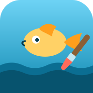

PA-APPS
Drei Apps zum Ausprobieren – und daneben die Angaben, die App Store Connect beim Einreichen abfragen würde. Die Seite ist ein Arbeitsstand zum Weitergeben, kein Angebot: alle Preise, Texte und Einstufungen sind Vorschläge. Was noch fehlt, steht in den gelben Kästen.
Die drei nebeneinander – so ließe sich am schnellsten entscheiden, welche überhaupt in den Store soll.
| App | Für wen | Kategorie | Alter | Preis (Vorschlag) |
|---|---|---|---|---|
| Mandala Atelier | Erwachsene | Grafik & Design | 4+ | 4,99 € einmalig |
| Blatt | Erwachsene | Grafik & Design | 4+ | 2,99 € einmalig |
| Sommer am Meer – Malstudio | Kinder, etwa 5–7 | Bildung | 4+ | 3,99 € einmalig |
Mandala Atelier
Symmetrie zum Ausmalen
Entwickler: noch festzulegen · Version 1.0
- Alter
- 4+keine Bedenken
- Kategorie
- Grafik& Design
- Sprache
- DEnur Deutsch
- Käufe in der App
- Neinkeine
- Werbung
- Neinkeine
Marketingtext
Eine Handbewegung, achtundvierzigfach.
Im Mandala Atelier zeichnet man ein einziges Segment – den Rest setzt die App. Aus einem Strich wird ein Kranz, aus einer Linie ein Muster. Dieses Gefühl ist das eigentliche Werkzeug: Ordnung entsteht nicht durch Sorgfalt, sie wird geschenkt.
Wer lieber färbt als zeichnet, findet 26 fertige Vorlagen und fünf Farbwelten aus gedeckten Pigmenten – Erdpigmente, Nordlicht, Färbergarten, Rauchglas und eine, die man sich selbst mischt. Füllen setzt Farbe in ein Feld und zugleich in alle übrigen Segmente.
Krumme Kreise sind eine Frage der Sache, nicht des Könnens. Das Werkzeug Form setzt deshalb dieselben fünf Bausteine exakt, aus denen auch die Vorlagen bestehen: Ring, Speiche, Blatt, Raute, Band.
Fertige Werke bleiben auf dem Gerät, in einer Galerie mit Titeln. Es gibt einen Druckbogen in A4 – wahlweise nur die Linien, zum Ausmalen mit echten Stiften. Und eine Sicherungsdatei, die zugleich der Weg auf ein zweites Gerät ist.
Keine Gamification. Keine Sterne, keine Pokale, keine Serien. Wer hier malt, will abschalten, nicht gewinnen.
Ohne Konto. Ohne Werbung. Ohne Netz. Nichts, was hier entsteht, verlässt das Gerät.
App-Datenschutz und Bedienungshilfen
Angaben für App Store Connect
| Name | Mandala Atelier 15/30 Zeichen |
|---|---|
| Untertitel | Symmetrie zum Ausmalen 22/30 Zeichen |
| Kategorie | Grafik & Design (primär), Lifestyle (sekundär) |
| Preis | 4,99 € einmalig – keine Käufe in der App, kein Abo |
| Altersfreigabe | 4+ – keine bedenklichen Inhalte, keine Links nach außen, kein Chat |
| Schlüsselwörter | Mandala, Symmetrie, Ausmalen, Zeichnen, Meditation, Achtsamkeit, Muster, Offline |
| Sprachen | Deutsch |
| Geräte | iPad und iPhone, Quer- und Hochformat, Apple Pencil |
| Copyright | © 2026 Name des Anbieters – noch festzulegen |
- Neigung des Apple Pencil – steht als offener Punkt im Konzeptpapier und wäre gegenüber Apples Richtlinie 4.2 ein starkes Argument.
- App-Symbol in 1024 × 1024 ohne Alphakanal – die vorhandenen Icons sind alle RGBA und würden abgelehnt.
- Englische Fassung? Ohne sie bleibt der Store faktisch auf den deutschsprachigen Raum beschränkt.
Blatt
Streichen, bis etwas erscheint
Entwickler: noch festzulegen · Version 1.0
- Alter
- 4+keine Bedenken
- Kategorie
- Grafik& Design
- Sprache
- DEnur Deutsch
- Käufe in der App
- Neinkeine
- Werbung
- Neinkeine
Marketingtext
Nichts wird vervielfältigt. Es ist schon da.
Blatt gibt einem einen leeren Bogen. Man streicht mit dem Finger darüber, und unter der Hand kommt eine Zeichnung hervor – so, wie man als Kind eine Münze unter Papier durchgerieben hat. Nicht schneller, wenn man drückt. Nur, wenn man bleibt.
Die Bewegung ist die ganze Bedienung. Kein Stift, keine Werkzeugleiste, keine Entscheidung vorweg. Neun Pigmente liegen unter dem Bogen bereit, mehr braucht es nicht.
Was fertig ist, wird weggelegt und bleibt im Stapel. Wer ein neues Blatt nimmt, wird gefragt, wonach ihm heute ist – und bekommt eines, das er nicht ausgesucht hat.
Die App hält sich zurück, solange gearbeitet wird: Die Bedienung liegt hinter einer kleinen Marke in der Ecke und kommt nur, wenn man sie holt.
Ohne Konto. Ohne Werbung. Ohne Netz.
App-Datenschutz und Bedienungshilfen
Angaben für App Store Connect
| Name | Blatt 5/30 Zeichen |
|---|---|
| Untertitel | Streichen, bis etwas erscheint 30/30 Zeichen |
| Kategorie | Grafik & Design (primär), Lifestyle (sekundär) |
| Preis | 2,99 € einmalig – kleiner als das Atelier, weil die App bewusst weniger tut |
| Altersfreigabe | 4+ |
| Schlüsselwörter | Frottage, Reiben, Relief, Achtsamkeit, ruhig, Muster, Papier, Offline |
| Sprachen | Deutsch |
| Geräte | iPad und iPhone, Quer- und Hochformat |
| Copyright | © 2026 Name des Anbieters – noch festzulegen |
- Der Name „Blatt“ ist im App Store sehr wahrscheinlich schon vergeben – App-Namen sind weltweit eindeutig. Ein Zusatz wird nötig sein, etwa „Blatt – Atelier“.
- Reicht die App für Apples Richtlinie 4.2 („Minimum Functionality“)? Von den dreien ist sie die schmalste und damit die gefährdetste. Eine gemeinsame App mit dem Mandala Atelier wäre die Alternative – widerspräche aber der Idee, beide getrennt zu vergleichen.
- App-Symbol in 1024 × 1024 ohne Alphakanal.

Sommer am Meer – Malstudio
Schritt für Schritt malen
Entwickler: noch festzulegen · Version 1.0
- Alter
- 4+für 5–7
- Kategorie
- BildungKinder 6–8
- Sprachen
- DE · ENumschaltbar
- Käufe in der App
- Neinkeine
- Werbung
- Neinkeine
Marketingtext
Ein Sommer auf Albarella – und am Ende kann man eine Muschel malen.
Das Malstudio zerlegt jedes Motiv in fünf ruhige Schritte. Links steht die Vorlage, und der Strich, der gerade dran ist, leuchtet rot. Rechts daneben malt das Kind ihn nach. Kein Zeitdruck, kein Punktestand, keine Niederlage – der nächste Schritt kommt, wenn er kommt.
Wer lieber färbt, schaltet auf Ausmalen und bekommt dieselben Motive als fertige Umrisse. Und wer gar nichts nachmalen will, erfindet unter Eigenes Motiv seine eigenen Schritte.
Die Motive kommen von einer Insel in der Poebene: Seepferdchen, Krabbe, Silberpappel, Neptungras. Dazu ein Sammelalbum mit Stickern, eine Schatzinsel und ein kleiner Wissensteil – warum Albarella so heißt, woher der Sand kommt.
Eine freundliche Stimme liest die Schritte vor, im Hintergrund läuft leise Musik. Beides lässt sich abschalten.
Mehrere Kinder teilen sich ein iPad, ohne sich in die Bilder zu malen: Jedes hat sein eigenes Profil und seine eigene Galerie.
Ohne Konto. Ohne Werbung. Ohne Käufe in der App. Nichts verlässt das Gerät.
App-Datenschutz und Bedienungshilfen
Angaben für App Store Connect
| Name | Sommer am Meer – Malstudio 26/30 Zeichen |
|---|---|
| Untertitel | Schritt für Schritt malen 25/30 Zeichen |
| Kategorie | Bildung (primär), Kinder / 6–8 Jahre (sekundär) |
| Preis | 3,99 € einmalig – bei Kinder-Apps ist ein einmaliger Preis der ehrlichste Weg |
| Altersfreigabe | 4+ – kein Chat, keine Links nach außen, keine Käufe |
| Schlüsselwörter | Malen, Kinder, zeichnen lernen, Schritt für Schritt, Meer, Ausmalen, Sticker, Offline |
| Sprachen | Deutsch, Englisch |
| Geräte | iPad zuerst, iPhone möglich; Quer- und Hochformat |
| Copyright | © 2026 Name des Anbieters – noch festzulegen |
- Kinder-Kategorie ja oder nein? Sie bringt Sichtbarkeit, verlangt aber Zusätzliches: keinerlei Analyse durch Dritte, keine Werbung, und jeder Link nach außen muss hinter eine Elternschranke. Die App erfüllt das heute schon – man muss es nur wissentlich zusagen.
- Das Malstudio liegt in einem eigenen Repo
(
pahlborn/malstudio) und wäre eine dritte, getrennte Einreichung mit eigener Bundle-ID. - Die Beispielbilder oben zeigen ein frisch angelegtes Profil „Mia“. Für den Store sollten es Aufnahmen mit gefüllter Galerie sein.
Was für alle drei gilt
Diese Punkte hängen nicht an einer einzelnen App, sondern am Konto. Sie sind einmal zu klären – dann für alle drei.
- Apple Developer Program, 99 € im Jahr, dazu ein Mac mit Xcode. Ohne beides geht nichts in den Store.
- Händlerstatus nach dem DSA. Wer in der EU anbietet, muss Name, Anschrift, Telefonnummer und E-Mail hinterlegen – sie erscheinen öffentlich auf jeder Produktseite. Für eine Privatperson ist das der unangenehmste Punkt und sollte zuerst entschieden werden.
- Datenschutzerklärung als eigene Adresse. Pflicht für jede App, auch wenn nichts erhoben wird. Eine schlichte Seite auf GitHub Pages genügt – gibt es bisher für keine der drei.
- Support-Adresse, ebenfalls Pflicht.
- Nativer Rahmen. Alle drei sind Web-Apps und lassen sich nicht direkt einreichen; sie brauchen ein Xcode-Projekt, das die Dateien lokal bündelt. Dabei fällt der Service Worker weg – im Bundle liegt ohnehin alles auf dem Gerät.
- Richtlinie 4.2. Apple lehnt Apps ab, die nur eine verpackte Website sind. Offline-Betrieb, Apple Pencil und das Sichern in die Fotos-App sind die Argumente dagegen.
Ausführlich steht das im Gespräch zu dieser Seite. Solange nichts davon entschieden ist, bleibt dieser Weg hier der bequemste: Adresse weitergeben, in Safari öffnen, über Teilen → Zum Home-Bildschirm ablegen. Danach starten die Apps im Vollbild und laufen ohne Netz.
Für den Vergleich Mandala gegen Blatt mit Testpersonen bitte weiterhin beide.html nehmen – die Seite hier beschreibt, was die Apps tun sollen, und würde das Ergebnis verfärben.